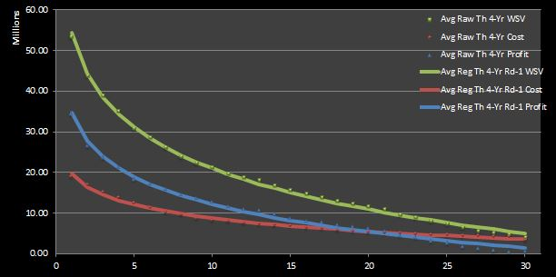

3 Estimating the Value of NBA Draft Picks
In this chapter I present my attempt to estimate the value of NBA draft picks.25 Given that countless other articles and research papers have already been conducted on this topic or something related to it, you may be wondering why I’m interested in covering a subject that many others have already carefully analyzed.
The answer is multifaceted. First, I’ve been a huge sports fan ever since I was a little kid, as I mentioned in a previous chapter about the origins of this website,. In particular, basketball is my favorite sport to play casually, and the NBA is probably my favorite professional league to follow.26 Second, since near the end of my time in college, I’ve learned a lot of the basics of topics such as game theory through online Massive Online Open Courses (MOOCs) and some other less formal mediums. I was hungry to find a topic to which I could apply some of my new-found knowledge in a meaningful way. Third, despite the other research discussing the value of NBA picks, I still feel like this subject matter can be explored in more ways. Thus, being a huge fan of the NBA and realizing that the NBA draft can be analyzed from a variety of perspectives based upon the knowledge I have gathered from the things I have recently studied, the value NBA draft picks turned out to be an easy choice of topic to analyze.
So why should you even read this if others have already written about in depth? First of all, I make references to economic theory and disciplines related to decision analysis when explaining terms. Secondly, and more importantly, I try to be as explicit as possible so that anyone can follow my methodology and adapt it to their liking if they want to investigate the matter themselves. I should note that, because it would have been foolish to have completely ignored all of the wonderful other research out there, some of my design choices may seem very similar to that of others. However, I assure you that I do my best to make my methodology unique where I think it is reasonable to differentiate from the example set by others. Also, as you can probably tell from my last two posts, my perspective on what__ “value”__ means is somewhat nuanced and different from others’ interpretation, so my answers to questions related to draft pick value in the NBA may, consequently, differ.
3.1 Which Drafts?
To begin, I need to choose which and how many drafts from which to draw data. I will settle on using data from the 18 drafts between 1995 and 2012. I reasoned that this data set defines a historical sample size that is significant enough for me to draw reasonable conclusions.27 Although I certainly could have used more data to improve the empirical accuracy of my calculations, I did not want to spend a large amount of time in doing so because I believe there is significantly more to be gained in learning how analysis techniques might be applied in this context. Also, I do not necessarily enjoy data mining and munging, and I didn’t want to take any extra time to write some scripts to retrieve and format the extra data, although I am certainly capable of doing so. In reality, I simply downloaded comma separated value (csv) files and formatted the data to my liking in Excel. In particular, I chose the 1995 draft as the first one my sample because 1995 was the first year that a rookie wage scale for first-round draft picks was instituted, which makes it possible to model the expected rookie contracts for those drafted in the top 30 (without having to look up the actual contracts handed out for each player individually). I chose the 2012 draft as the last one in my sample because rookies from the 2012 draft have had the opportunity to play four seasons, which is the typical length of the contracts given to those drafted in the first round.
3.2 The Rookie Wage Scale
A brief overview of how the Collective Bargaining Agreement CBA) structures the rookie contracts of first-round picks should be made. According to the CBA, NBA teams have full rights to their first-round pick for five years.28 The CBA specifies the salary number that teams pay a player drafted at a given slot in the first round. For example, the rookie scale for the 2012 draft class can be seen here. Although teams can sign their players to any number within an 80% to 120% range of the slot’s specific compensation obligations, the two sides almost always agree to the maximum allowable salary number (i.e. 120% of the nominal value) in practice. Teams are obligated to pay their first-round picks for the first two seasons, and then have options to resign them for their third and fourth years,. It should be noted that the teams have to decide whether to pick up these options before the players’ second and third years respectively. Then, after the picks have played four seasons, the team has the option to make a qualifying offer to the player for a fifth year, still abiding by the salary limitations imposed by the CBA. In reality, most first-round draft picks that do well in their first four seasons sign a new contract (without the salary restrictions dictated by the CBA) in restricted free agency after their fourth year in the league. (The player’s team has the right to match any contract to the player by another team, which is the reason for the “restricted” descriptor.)29
There are certainly exceptions to the general rule-of-thumb of first-round draft picks playing four seasons under a rookie contract. Top 30 rookies who do not play well may be released and never play more than two or three seasons under their original contract. However, it is very uncommon for teams to neglect the draft pick’s third-year option because they will have only had one season to evaluate the prospect at the time that they must make this decision. Presumptively, a first-draft pick demonstrates a sufficient amount of potential to persuade their team from deciding after only one year that they no longer want to keep the player on their roster.30 For similar reasons, it is uncommon for teams to neglect to pick up the player’s fourth-year option, although this scenario has a slightly greater chance of occurring because teams will have had two seasons to evaluate their prospects at the time of the decision.31 More rarely, there have been some first-round picks that take the fifth year qualifying option in order to become an unrestricted free agent in the following offseason and have the ability to sign with any team that they choose, perhaps because they have not enjoyed their time with their original team.32
As a technical note, I should let you know that there were only 29 NBA teams from 1995 to 2006 before a 30th franchise was added to the league. Consequently, there were only 29 picks in the first round before 2007, and only 58 total picks in the draft. Also, some drafts had one team that had to give up rights to a pick in these years due to violations, so some drafts only had 57 picks. However, the rookie wage scale has always accounted for the top 30 picks, dating back to 1995. Thus, some of the upcoming cost, value, and profit numbers are skewed because I don’t attempt to account for these nuances.
3.3 Calculating Cost
Before discussing my method of dealing with player salaries, I have to give major props to Nate Silver, who makes an attempt to account for the exceptions that I have described (about the rule-of-thumb template for first-round rookie contracts) in his take on the value of NBA draft picks. This means that his results might be a bit more accurate than mine. (But hey, I’m not quite the number-crunching machine that Silver is, so don’t hold me to his standard!) Arturo Galletti doesn’t provide much detail about how he deals with this topic in his research but I think it’s safe to assume that he does something similar to what I have done here. Anyways, you can read more about the methodologies and results of Silver, Galletti, and others in another chapter I made on existing research concerning this general topic of NBA draft pick value.
Now, for my analysis, I make the simplifying assumption that all top 30 picks receive the basic four-year, 120%-baseline rookie contract. As an example, the numbers for the 2012 first-round picks can be seen in Figure 1.
Figure 1: Four-Year Cost of 2012 First-Round Draft Picks
In the context of economic theory, we can think of these salaries as the costs for draft picks, which can be interpreted as assets. Moreover, in a game theory context, this cost is like a discount factor applied to a payoff in a 30-player, iterated non-zero sum game. The game is the draft, where the players are the teams, and the payoffs are the value earned from draft picks. (I will discuss this notion of “value” in detail in the next section.) In this case, I am applying a discount factor unique to each to draft slot instead of scaling payoffs on a multiplicative basis, as is done traditionally in games.
Before moving on, let me take a quick pit stop and highlight an important caveat. Notice that I have only discussed first-round draft picks thus far. This is because the CBA does NOT determine how teams must pay their second round picks. This makes it difficult to model the value of second-round picks without rigorously scraping the web for details of their contracts, which aren’t always publicly available anyways. For this reason, my analysis in this chapter focuses only on top 30 picks. (Nevertheless, I plan to make an attempt to model the value of second-round picks in the future in order to investigate the relative trade value of picks.)
3.4 Defining Value
With the question about how to quantify a player’s cost out of the way, now there is the question of how to measure a player’s value in terms of basketball production. From an economics perspective, this basketball value can be interpreted as the returns of an asset. However, because the term “value” is more intuitive in this context, I will use it instead of “returns” (although I may still use “returns” every so often).
While determining cost by contract numbers is probably not very controversial, there is certainly some debate as to how determine the value of an individual player in the context of team sport. Should I use a conventional box score statistic like points? (Definitely not. This is way too naive.) Perhaps some combination of these kinds of stats? (This is a better idea than simply using one statistics, but it could still be better.) My answer is along that train of thought.
My choice is to use an “all-in-one” metric called win shares (WS), which attempts to determine what its name implies—the value of an individual player in terms of team wins. WS has been used for years among analytical circles to measure the value of players, along with other all-in-one metrics such as player efficiency rating (PER) and value over replacement player (VORP). As proof of validity, several of the researchers that I discussed in a prior chapter use WS in their draft pick value models.
Why choose WS over other all-in-one metrics? Without going into all the mundane details of how it is calculated or deep theoretical arguments about why it is the best all-in-one metric, the primary reason for this choice is simple—WS is contextualized on a seasonal basis, which lends itself to my analysis. On the other hand, most other advanced statistics are calculated per minute or per possession rate like most other advanced statistics. Instead, it. (I should note that there are methods for converting PER to a seasonal rate, but PER is typically not used in such a manner.) Also, WS can be easily found on many websites such as Basketball Reference, and using it prevents me from having to calculate my own metric. represented by WS with the cost represented by the player’s contract. In fact, Basketball Reference’s querying tool makes it relatively simple for me to find the four-year WS sums of players drafted in a given year.33
Anyways, I don’t think the integrity of the my analysis is compromised significantly, if at all, because I use four-year sums and averages consistently. Also, taking sums and averages is arguably more representative of how general managers set their expectations for rookies. Most general managers are probably not judging rookies on how they can immediately impact their teams in the first year or so after being drafted; instead, they are most likely evaluating prospects on the potential value and profit to be had over the course of a many years, even going beyond the first rookie contract. Alas, perhaps in the future I may take a more discrete look at cost, value, and profit for each of the four years following a draft and compare them to my current analysis, but I do not think it would cause me to come to significantly different conclusions.)
Although I said I wasn’t going to go into detail about why WS might be the best all-in-one metric, I feel obliged to mention the biggest disadvantages of its most legitimate alternatives—PER and VORP. (I’m sorry to those fans of plus-minus, but there are just so many version of Plus-Minus—including as box plus-minus (BPM), adjusted plus-minus (APM), and regularized adjusted plus-minus (RAPM)–that I don’t even consider it here.) PER can be skewed significantly by small minute sample sizes, and it arguably does not capture the value defensive play very well. Although VORP is arguably the most predictive all-in-one statistic, it also suffers from the difficulty of being translated to a seasonal rate.34
In relation to utility theory, one could argue that the metric used to represent basketball value—in this case, WS—represents a player’s utility. (In relation to game theory, which incorporates the principles of utility theory, WS would represent a payoff, as mentioned before.) From a purely basketball perspective, this make sense. However, the reality is that the NBA is a business and players are not only valued by the quality of their play, but also the desirability of their contracts. Put another way, given two players who contribute equally on the court (and are equal in terms of other factors such as risk of injury, personality, etc.), general managers would choose the one with a cheaper contract. Thus, I do not think that we can simply judge a player’s utility by their WS (or some other all-in-one metric). Instead, we must discount the value.
So how do I translate WS to a currency? My answer here is not as straightforward as my choice of WS is, but it isn’t too difficult either. I can simply (1) sum up team payroll data35 for a given year ^[for example, the team payrolls for 2012 can be seen [here](https://www.eskimo.com/~pbender/misc/salaries13.txt and (2) divide this number by the number of games played in the regular season.36 The result is an approximation for what I call “WS value” (WSV).37 I did this for each of the 21 seasons from 1995 to 2015.38 The results are shown in Figure 2.
Figure 2: Single-Season WSVs for 1995 — 2015
Next, I simply averaged the three seasons’ WSs with a given starting season from the five years for which I am interested (i.e. 1995 to 2012). As a result, I came up with a average four-year WSV for each season from 1995 to 2012, which can be seen in Figure 3.
Figure 3: Average Four-Year WSVs for 1995 — 2015
3.5 Profit: Value - Cost
Using these WSV averaged over four years, I can calculate the WSV for the top 30 picks for each of the 18 drafts by multiplying their number of WS by the appropriate average four-year WSV. As a technical note, I refer to these values as “empirical” in order to differentiate them with my upcoming regressed and “theoretical” analysis.39 Similarly, I say “raw” to distinguish between averaged results that are calculated using “regressed” values.
After coming up with a number for the returns (i.e. the basketball production in terms of WS) of the asset (i.e. the draft slot), I can determine the empirical “____profit____” of each draft pick by taking the difference of the empirical four-year WSV and the draft slot’s four-year cost. Here, the term “profit” is used just as it would be in an economic context.40 Anyways, (for those you who couldn’t care less about terminology) the un-averaged, single-season profits for each first-round draft slot in 2012 can be seen in Figure 4.
Figure 4: Emperical Four-Year Profit of 2012 First-Round Draft Picks
Figure 5 displays the average results from the five drafts from 1995 to 2012 in tabular form. Figure 6 shows the same data in the form of a chart. Having mentioned them before, I should note that Silver and Galletti come up with similar graphs. Also, Galletti has a chart similar to my Figure 5.
Figure 5: Average Raw Empirical Four-Year Profit of 1995 — 2012 First-Round Draft Picks
Figure 6: Average Raw Empirical Four-Year Profit of 1995 — 2012 First-Round Draft Picks
Before drawing any conclusions, I must admit that the results of the calculations made so far appear a bit noisy. This is due to the relatively small sample size. That’s no problem! Regression is a real savior in situations like this. Figure 7 shows the results of a linear-log regression run on the average raw data.41 If you read a prior chapter discussing existing research on the topic of NBA draft pick value, you should remember that Kubatko and that Galletti used the same exact type of regression in their 2009 and 2013posts respectively.

Figure 7: Average Regressed Empirical Four-Year
The regression readily confirms what is implied by the raw data. That is, it is clear that higher draft picks result in greater value for the team, even after accounting for contracts. Thus, I have provided an answer to the “first” question (“How valuable are NBA draft picks?”)__ __that I posed in the already-mentioned prior post chapter.
You might be wondering exactly how my regressions look. I have stated the empirical WS, WSV, and profit below.
- Avg Reg Emp 4-Yr Rd-1 WS [WS] = -5.41 * ln(pick) + 23.78
- Avg Reg Emp 4-Yr Rd-1 WSV [$ million]: -7.729 * ln(pick) + 34.265
- Avg Reg Emp 4-Yr Rd-1 Profit [$ million]: -2.990 * ln(pick) + 14.546
Although the WS line is not depicted in Figure 7, I show its equation here so that it may be compared to the Kubatko’s regression formula. Moreover, my WSV and profit equations can be compared directly to Galletti’s analogues.
- Kubatko’s EV [WS]: -6.3 * log(pick) + 26.5
- Galletti’s Value of Wins [$ million]: -13.79 * ln(pick) + 52.785
- Galletti’s Net Actual Value [$ million]: -8.991 * ln(pick) + 32.705
Although Kubatko’sequation resembles mine fairly closely, there seems to be a noticable difference between mine and Galletti’s. Nevertheless, do not let the numbers fool you! I can assure you that when each equation is graphed along with its equivalent, the curves practically overlap.42 In fact, if you use the concept of indifference probability (as I do in another chapter) to normalize the regressed values on a 0 to 1 unit-less basis, you will find that the calculated values are exactly equal!
Stepping back from these technicalities, I should note that the non-linear, decaying behavior of the value and profit lines confirm the common knowledge that the best NBA players largely dictate the performance of their teams, regardless of their teammates. This is reason why many fans classify players as either instrumental “super-stars”, satisfactory “starters”, or plain-ol’ “role players”.) More often than not, higher drafts picks turn out to be better players and provide value that is not linearly related to the value of a lesser player.
At this point, I have estimates for the average empirical four-year cost, value, and profit of players picked in the first round of the five drafts from 1995 to 2012 using the WS metric as my basis. (I also have regressed versions of empirical WS, WSV, cost, and profit, but they are not shown here.) I have shown that all first-round draft picks represent bargains in the sense that their basketball production contextualized in terms of currency exceeds their monetary cost, as determined by the salary obligations for the draft slots. Also, I have shown that the top picks are the most profitable.
I know what you’re thinking: “That’s nothing new. Others have done that before.” Alright, you have a point. But here is where I start doing things differently.43
3.6 A Different Kind of Profit
What if teams drafted ideally? That is, what if they picked the first team picked the best available rookie (in terms of WS), the next team selected the second-best rookie, etc.? If I re-order draft picks from a given year by WS instead of draft pick and make the same assumptions about contracts, how would that look? Figures 8 to 10 are analogues to Figures 4, 5, and 7 for this new “theoretical” analysis. 44
Figure 8: Theoretical Four-Year Profit of 2012 First-Round Draft Picks
Figure 9: Average Raw Theoretical Four-Year Profit of 1995 — 2012 First-Round Draft Picks
Figure 10: Average Raw Theoretical Four-Year Profit of 1995 — 2012 First-Round Draft Picks
Obviously the integrity of the original WS data is somewhat compromised if players are re-ordered by WS. Players would have certainly performed differently if they had been drafted by different teams, meaning that they would have played with different coaches and teammates. However, modeling these changes would be fairly difficult. Anyways, I think the results that that I have found would not be much different from what we would observe if draft picks were made in an ideal manner.
So what does theoretical profit mean in a non-basketball context? From the perspective of the disciplines such as economic or game theory, one can interpret it as the result of every team having perfect information. Conversely, we might say that empirical profit represents the results of every team not having perfect information available to them.
3.7 The End (for Now)
For now, I will leave the subject of NBA draft pick value here. I did a lot here—I have calculated estimates for the average raw and regressed empirical and theoretical WS, cost, value, and profit of NBA players drafted from 1995 to 2012. In doing so, I have essentially provided my own answer to my “first” big-picture question about the value of NBA draft picks. (Because I will never tire from linking the reader to my other relevant content, I oblige you to read my post discussing answers to my “first” and “second” questions provided by other researchers, as well as my follow-up post discussing peer answers to my “third” and “fourth” questions.)
However, there is still so much more analysis that can be done, including some that can refine what I discussed here. Anyways, I plan to use the data sets developed in this chapter a basis for more analysis.
Microsoft Excel is my software tool that I use here. R and python are wonderful alternatives with which I have gained experience recently, but, for now, I am most comfortable with Excel, especially when it comes to plotting and formatting.↩
Of course, you could probably guess that my favorite is the Spurs. Nevertheless, the beauty of the NBA is that it’s play is defined more so by great individual players than by teams themselves, so great players make their teams entertaining to watch. Thus, I think I can say that I enjoy watching any team on any given night. Moreover, I’m not a Spurs “fanatic” in the traditional sense of the word. As a wannabe analyst, I try to be as neutral as possible when observing teams.↩
All draft data was extracted from Basketball Reference.↩
An overview of the 2011 CBA provided by salary cap guru Larry Coon can be found here.↩
Consequently, the revenue earned by top 30 picks becomes highly variable after the fourth year of their rookie deals. It would be difficult to track post-rookie contract numbers for the purpose of the project. Similarly, it is difficult to verify that the contracts of top 30 picks follow the general contract template having four-year length with 120% of nominal compensation. These two issues could be addressed by some nifty web scraping scripts. However, as I mentioned before, I wasn’t analysis.↩
Joe Alexander sounds more like an accountant’s name than a high-flying potential lottery pick, am I right?↩
In retrospect, picking Jonny Flynn over Stephen Curry may not have been the most astute of decisions.↩
Unfortunately for him, Greg Monroe’s decision to sign with the Milwaukee Bucks doesn’t look like it has turned out so great.↩
If you’re wondering why I use four-year sums instead of the WS for individual seasons, it is because it requires much more work to do so. Using Basketball Reference as a resource, I would have to extract annual WS values for each player from each of their individual career stats pages. I’m not sure if there is a better or easier way of doing this other than writing a script to scrape all the data. In retrospect, I certainly could have written these kinds of scripts fairly easy, but I did not think of it at the time of starting all of my analysis. This would have also allowed me to get exact data regarding contracts. Nevertheless, having exact contract information regarding first-round rookies is arguably not necessary because general managers probably expect that the typical application of the rookie wage scale, so I don’t think it’s a good idea to try to account for exceptions to the general rule-of-thumb—such as major busts or very early retirement—in our models. On the other hand, the empirical salary data for second-round picks would be extremely helpful for evaluating the cost and value of second-round picks without having to make huge assumptions. It would allow me to expand my look at the draft in a manner such that the relative desirability of first-round picks would be better encapsulated because the last pick in the first round would not have to serve as a “baseline” measurement.↩
Having lightly criticized PER and VORP, I must admit that one downside of WS is that players on good teams tend to have over-inflated WS because those teams win more often and, figuratively, have more wins to attribute to its players. Nevertheless, because the highest-picked, more talented rookies tend to be picked by worse teams, this WS bias is not too troublesome for this analysis. If anything, this bias causes the results to be regularized because the potentially grandiose and miniscule effects of higher and lower picks respectively may be offset by the talent of their teams.↩
credit to Patricia Bender for collecting the data at her website↩
1230 for a typical 82-game season with 32 teams, 1189 for seasons before the 2007 expansion when there were only 29 teams, 725 for the lockout-shortened 1999 season, and 990 for the lockout-shortened 2011 season↩
I could be more granular here by dividing each team’s win total in a given season by its team payroll for that season to get a team-specific WSV for each season. However, I don’t think the results would differ noticeably.↩
Galletti uses a similar method for translating WP to a monetary value, and Silver uses the figure $1.75 million for his calculations.↩
I always use the descriptor “theoretical” for cost even with my analysis of empirical WS because I do not use actual contract numbers. Instead, I use the projected cost numbers outlined by the rookie wage scale and its general application, as discussed before.↩
As a reminder, I am using the everyday term “value” in my writing, or the basketball metric WSV in my analysis, to represent the economic concept “returns”. On the other hand, my use of “cost” aligns with its intuitive and economic meanings. With respect to the term “profit” In the context of utility or game theory, one might say that it can also be interpreted as a “utility”. However, to be consistent with the economic context that I have applied up to this point, I will use primarily use the term “profit”. Also, I just think it is more distinctive than the term “utility”.↩
Here, the “Rd-1” descriptor is to added note that the regression is run only on first-round data.(As I hinted to before, I hope to analyze second-round data by making specific assumptions when modeling second-round rookie contracts in the future.↩
I might add those graphs here at a later time as proof, but I have chosen not to do so for now.↩
As a note to the reader, given how much stuff I have covered so far, this might seem like a natural breaking point at which to end this part of the analysis and continue in a separate part. However, because the “theoretical” analysis so closely follows the empirical analysis done up to this point, I have chosen not to do so.↩
As a technical note, in this analysis I looked at all drafted players for a given year and simply sorted them by descending WS. I did not consider un-drafted players.↩